热更新很早就想体验一下了，最近工作不是很忙，腾出来一些时间体验了一下，感觉还是挺爽的。
开发环境：
Android Studio 3.5com.aliyun.ams:alicloud-android-hotfix:3.2.8
创建项目
为了贴近实际的开发场景，在项目中引入了自己创建的基础库框架：
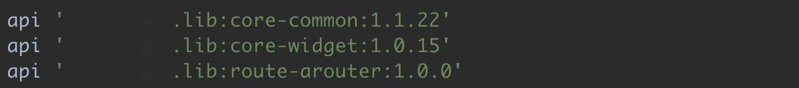
项目采用了组件化，项目结构如下：
- app：壳项目，包含了 MainActivity 和 Application。
- common：通用组件，包含通用依赖库声明，还有基类界面和组件功能接口。
- launch：启动组件，包含一个 SplashActivity。
- home：首页组件，包含一个HomeFragment。
- user：用户组件，包含一个 UserFragment 和 一个 WebActivity，WebActivity里面是空的，只是声明了一个类，继承自 Activity，没有布局文件，只是在
AndroidManifest.xml中配置了该类。
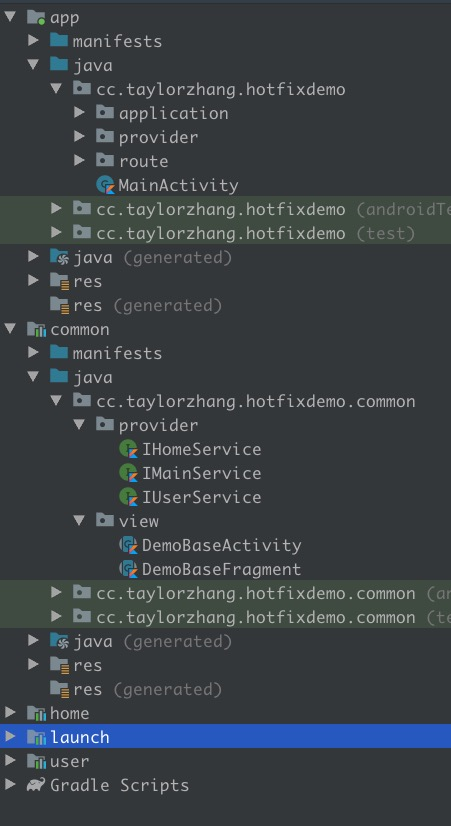
集成Sophix
1. 创建产品及应用
先创建产品及应用，可以参考阿里云官方文档：创建产品及应用。
2. 集成SDK
2.1 添加依赖
在项目的 build.gradle 添加：
1 | repositories { |
在 app 的 build.gradle 中添加：
1 | dependencies { |
2.2 声明权限
在 AndroidManifest.xml 中声明 Sophix 需要的权限：
1 | <! -- 网络权限 --> |
READ_EXTERNAL_STORAGE权限属于Dangerous Permissions，仅调试工具获取外部补丁需要，不影响线上发布的补丁加载，调试时请自行做好android6.0以上的运行时权限获取。
2.3 配置账号信息
在 AndroidManifest.xml 中间的 application 节点下添加如下配置：
1 | <meta-data |
也可以不在这里配置账号信息，因为 App ID/App Secret 将被用于计量计费，处于安全考虑，官方建议在代码中使用 setSecretMetaData 这个方法设置账号信息，这个放在后面讲。
2.4 配置混淆
1 | # 基线包使用，生成mapping.txt |
2.5 不使用R8
在项目的 gradle.properties 文件中添加如下配置：
1 | # 热更新混淆需要使用-applymapping mapping.txt，而R8对这个支持的不是很好，所以暂不使用R8 |
一般情况下，正式环境的代码是混淆了的，为了让热更新工作正常，对于补丁包，在混淆的时候，需要使用最初包（官方称为基线包）生成的 mapping 文件，这样补丁包中的混淆规则会和最初包保持一致。
为了达到上述的效果，需要使用-applymapping mapping.txt，在 Android Studio 3.5 上，R8 已经是默认的混淆工具，但是 R8 对这条指令支持的不是很好，我在尝试的时候，一直打包失败，在询问了官方技术支持后，选择不使用 R8。
2.6 初始化SDK
2.6.1 新建SophixStubApplication
1 | import android.content.Context; |
2.6.2 配置SophixStubApplication
修改 AndroidManifest.xml 文件，移除原本的 Application，设置为 SophixStubApplication：
1 | <application |
2.6.3 注意事项
2.6.3.1 使用Java编写SophixStubApplication
在实际项目中，我基本上都是使用 Kotlin 开发，对于 SophixStubApplication 应该使用 Java 编写，参考自 Hotfix补丁工具报错排查步骤。
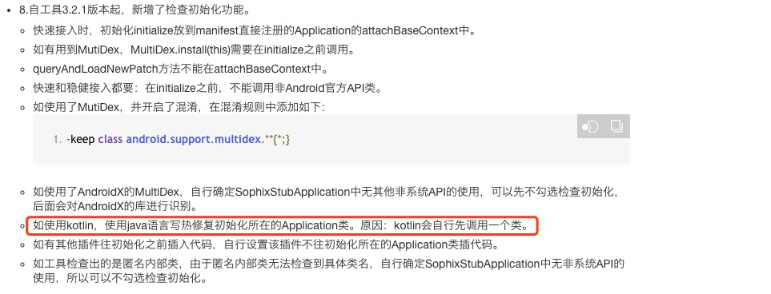
2.6.3.2 不要在SophixStubApplication写业务逻辑
SophixStubApplication 是 Sophix 入口类，专门用于初始化 Sophix，不应包含任何业务逻辑。
此类必须继承自 SophixApplication，onCreate 方法不需要实现。
此类不应与项目中的其他类有任何互相调用的逻辑，必须完全做到隔离。
注意原先 Application里不需要再重复初始化 Sophix，并且需要避免混淆原先 Application 类。
2.7 添加tag（可选）
可以通过 setTags接口 [v3.2.7新增]，设置端上拉取补丁包时的标签，可以支持条件更为丰富的灰度发布，以下为简单示例：
1 | List<String> tags = new ArrayList<>(); |
1 | List<String> tags = new ArrayList<>(); |
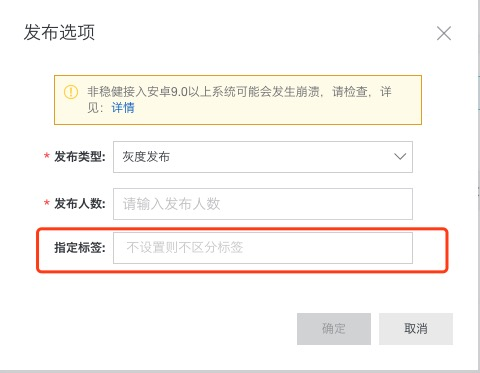
如上，设置不同的tags，同一版本号下，可以打两个或者多个基线包，线上发布时用production的基线包，测试环境用test的基线包，这样就可以测试同一版本号下的同一个补丁了，两个环境互不影响。tags可以add多个，结构为前后非空字符串即可。生成补丁时，用同样tags的基线包和修复包。
2.8 处理补丁加载回调
在 SophixStubApplication 中，并没有写补丁加载回调处理逻辑，而是创建了一个接口，通过观察者模式的方式把处理逻辑放在外面处理。这样的目的是，SophixManager 初始化后热更新才开始工作，写在初始化之前的代码热更新是不能作用到的。
在本项目中，把处理逻辑放在了实际的 Application 中：
1 | class Application : Application() { |
这里有一点需要注意，不可以直接调用
Process.killProcess(Process.myPid())来杀进程，这样会扰乱 Sophix 的内部状态。因此如果需要杀死进程，建议调用SophixManager.getInstance().killProcessSafely()杀死进程，该方法会在内部做一些适当处理后才杀死本进程。
2.9 增加检查补丁更新逻辑
阿里 Sophix 的收费方式是按调用 queryAndLoadNewPatch 方法的次数收费，每月有一定的免费阈值：
- 月活设备(MAU): 5万。每个账号，每月5万台设备免费。
- 日均查询次数：20次。每个账号下的每个应用平均到每台设备，一天免费查补丁询20次。
- 补丁分发：完全不做次数限制，不额外收取流量费。
请谨慎调用 queryAndLoadNewPatch。
因为是 Demo，我这里的处理逻辑是很简单，首页有一个按钮，点击一下就调用一次 queryAndLoadNewPatch。
1 | override fun initListener() { |
打最初包（基线包）
项目效果：
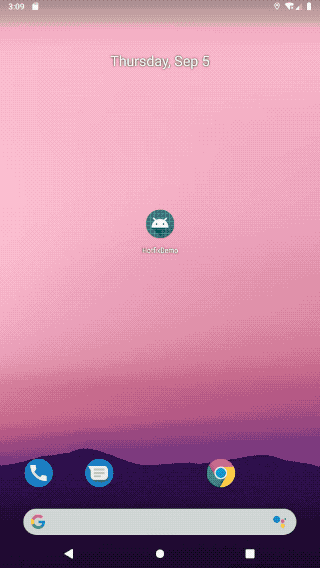
1. 备份最初包
将 app/build/outputs/apk/release 下的正式包备份，重命名为 app-release-0.apk。
2. 移动maping.txt
将 app/build/outputs/mapping/release 路径下的 maping.txt 移动到 /app 路径下,
3. 修改混淆文件
将原来的混淆文件：
1 | # 基线包使用，生成mapping.txt |
调整为：
1 | # 修复后的项目使用，保证混淆结果一致 |
这个改动是为了接下来打热修复补丁，如果接下来要发新版本（版本号需要变动），则还是使用
-printmapping mapping.txt。
第一次热更新-修改资源
1. 更新代码
-
更换Splash的背景图片，不修改图片的名字，注意：SplashActivity没有设置布局文件，而是通过设置主题的方式设置的背景图片：
1
2
3
4
5
6
7
8
9
10
11
12
13
14
15
16
17
18<activity
android:name=".SplashActivity"
android:configChanges="orientation|keyboardHidden|screenSize"
android:screenOrientation="portrait"
android:theme="@style/SplashTheme" >
<intent-filter>
<action android:name="android.intent.action.MAIN" />
<category android:name="android.intent.category.LAUNCHER" />
</intent-filter>
</activity>
<style name="SplashTheme" parent="AppTheme">
<item name="android:windowNoTitle">true</item>
<item name="android:windowFullscreen">true</item>
<item name="android:windowContentOverlay">@null</item>
<!-- 启动页背景 -->
<item name="android:windowBackground">@drawable/launch_splash_1</item>
</style> -
替换首页第一张图片，不修改图片的名字，注意该图片是放在 drawable 文件下。
替换首页第二张图片，不修改图片的名字，注意该图片是放在 assets 文件下。
在布局文件中修改按钮文本的颜色。
在字符串资源文件中修改按钮的文本。
-
替换我的第一张图片，修改图片的名字，注意该图片是放在 drawable 文件下。
替换我的第二张图片，修改图片的名字，注意该图片是放在 assets 文件下。
在布局文件中修改按钮文本的颜色。
在字符串资源文件中修改按钮的文本。
替换我的跳转至百度按钮点击事件中的toast文案。
2. 生成补丁
2.1 生成新包
运行打包命令，生成新包，重命名为 app-release-1.apk。
2.2 下载打补丁工具
如果没有打补丁工具 SophixPatchTool，则可以通过点击以下链接下载：
2.3 选择包
运行打补丁工具，选择包：
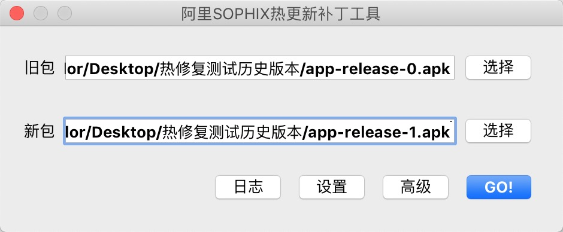
2.4 调整设置
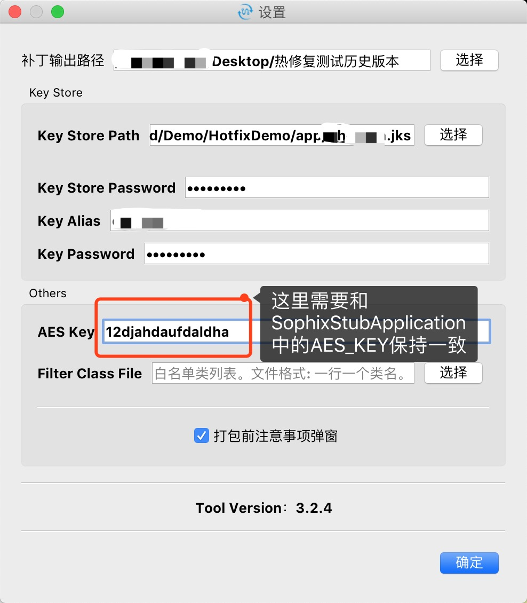
2.5 调整高级
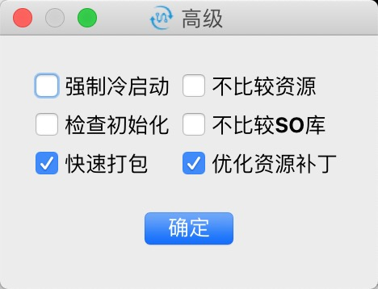
注意，这里如果勾选了检查初始化，打补丁工具会检查 SophixStubApplication 中的代码，不能包含非系统API，会报错。如果使用了 AndroidX 的 MultiDex，工具也会报错，可以先不勾选检查初始化，自行确定SophixStubApplication中无其他非系统API的使用，该工具后面会对AndroidX的库进行识别。
其他选项，请按需自行选择是否勾选。
2.6 生成Patch
点击按钮 GO!，生成补丁。
3. 添加版本
进入移动研发平台 EMAS -> 选择创建的产品 -> 移动热修复 -> 补丁管理，然后点击添加版本按钮，填写版本。
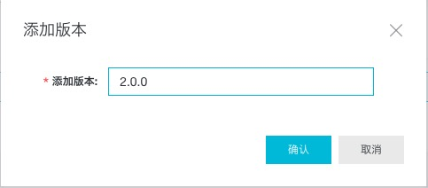
特别注意：这里的版本，必须和代码中 setAppVersion 的内容保持完全一致，新版控制台版本号已无限制，字符串即可。
在 SophixStubApplication 的代码中，我们选择的使用App的 versionName 作为 setAppVersion 的参数，那么这里填写的内容就是对应版本 App 的 versionName 。
我在这里就踩坑了，之前上传 App 到应用市场，应用市场都会读取 Apk 中的版本号，不用手动填写，我以为这里也是一样。以为填写版本号是为了方便用户使用，所以随手就加了 “v” 作为前缀，如下图所示：
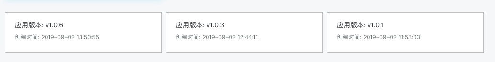
结果，在补丁发布后，App始终都检测不到又新补丁，一度怀疑人生。
4. 上传补丁
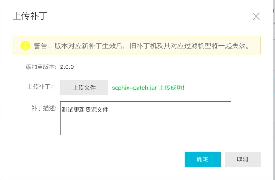
目前支持的补丁大小最大为30MB，参考自移动热修复：补丁大小有什么限制？
5. 本地测试
下载本地调试工具，把调试工具和 app-release-0.apk 都安装到手机上。
先打开App，再打开调用工具，点击连接应用，
鼠标悬停在提示位置：
点击扫描二维码，安装补丁，重启App，查看App是否生效：
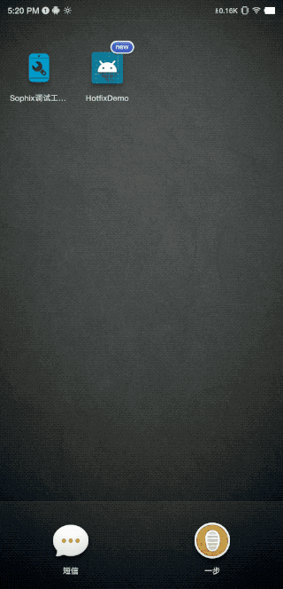
6. 灰度测试
灰度发布的时候，可以指定前面提到的tag。
测试效果：
7. 正式上线
经过本地测试和灰度测试，确认无误后选择全量发布：
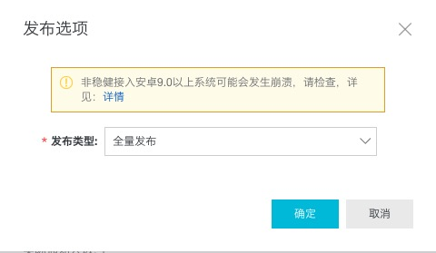
8. 热更新结果
| 变动项 | 结果 |
|---|---|
| 更换Splash的背景图片，不修改图片的名字，注意该图片是放在 drawable 文件下且通过主题设置 | 未生效 |
| 替换首页第一张图片，不修改图片的名字，注意该图片是放在 drawable 文件下 | 生效 |
| 替换首页第二张图片，不修改图片的名字，注意该图片是放在 assets 文件下 | 未生效 |
| 在布局文件中修改按钮文本的颜色 | 生效 |
| 在字符串资源文件中修改按钮的文本 | 生效 |
| 替换我的第一张图片，修改图片的名字，注意该图片是放在 drawable 文件下 | 生效 |
| 替换我的第二张图片，修改图片的名字，注意该图片是放在 assets 文件下 | 生效 |
| 在布局文件中修改按钮文本的颜色 | 生效 |
| 在字符串资源文件中修改按钮的文本 | 生效 |
| 替换我的跳转至百度按钮点击事件中的toast文案 | 生效 |
第二次热更新-使用占位Activity
1. 更新代码
- 为空的 WebActivity 创建布局文件，增加路由，接收路由参数url，用 WebView 显示 url 的内容。
- 我的页面跳转至百度按钮点击，跳转至 webActivity，携带参数为百度网页地址。
- 更换Splash的背景图片，修改图片的名字。
2. 生成补丁并发布
重复的步骤不再展开，新生成的包命名为 app-release-2.apk，注意选择包的时候，旧包为 app-release-0.apk 而不是 app-release-1.apk。
3. 热更新结果
| 变动项 | 结果 |
|---|---|
| 增加空 WebActivity 内容，展示指定 url 的网页内容 | 生效 |
| 我的页面跳转至百度按钮点击，跳转至 webActivity，携带参数为百度网页地址。 | 生效 |
| 更换Splash的背景图片，修改图片的名字 | 不生效 |
第三次热更新-新增So和Style
1. 更新代码
-
集成腾讯浏览服务TBS（该框架中包含so文件），将 WebActivity 中的系统 WebView 替换为 TBS 的 WebView。
-
进入 WebActivity 的时候显示一个 Toast，确认当前显示的已经集成 TBS 的 Activity。
-
在我的页面新增两个TextView，除了位置属性外，其他属性全部使用 Style。第一个TextStyle中部分是实际值，部分是引用，第二个 TextStyle 除了
android:gravity全部使用引用。1
2
3
4
5
6
7
8
9
10
11
12
13
14
15
16
17
18
19
20
21
22
23
24
25<style name="UserTestTextStyle1">
<item name="android:layout_width">80dp</item>
<item name="android:layout_height">30dp</item>
<item name="android:gravity">center</item>
<item name="android:background">@color/common_red_F41</item>
<item name="android:textSize" tools:ignore="SpUsage">20dp</item>
<item name="android:textColor">@color/common_white</item>
<item name="android:text">@string/user_test_style_1</item>
</style>
<style name="UserTestTextStyle2">
<item name="android:layout_width">@dimen/TestText2Width</item>
<item name="android:layout_height">@dimen/TestText2height</item>
<item name="android:gravity">center</item>
<item name="android:background">@color/TestText2Background</item>
<item name="android:textSize" tools:ignore="SpUsage">@dimen/TestText2TextSize</item>
<item name="android:textColor">@color/TestText2TextColor</item>
<item name="android:text">@string/user_test_style_2</item>
</style>
<dimen name="TestText2Width">80dp</dimen>
<dimen name="TestText2height">30dp</dimen>
<color name="TestText2Background">#FF4A1E</color>
<dimen name="TestText2TextSize">20dp</dimen>
<color name="TestText2TextColor">#FFFFFF</color>
2. 生成补丁并发布
重复的步骤不再展开，新生成的包命名为 app-release-3.apk，注意选择包的时候，旧包为 app-release-0.apk 而不是 app-release-2.apk。
3. 热更新结果
| 变动项 | 结果 |
|---|---|
| 集成腾讯浏览服务 TBS | 生效 |
| WebActivity 进入的时候显示 Toast | 生效 |
| 我的页面新增TestView，使用 Style，在 Style 中部分使用实际值，部分使用引用 | 生效 |
我的页面新增TestView，使用 Style，在 Style 中除了 android:gravity 全部使用引用 |
生效 |
第四次热更新-修改Style
1. 更新代码
修改我的页面两个 TextView 的 style，第一个直接修改实际值，第二个修改引用内容的值。
1 | <style name="UserTestTextStyle1"> |
2. 生成补丁并发布
重复的步骤不再展开，新生成的包命名为 app-release-4.apk，注意选择包的时候，旧包为 app-release-0.apk 而不是 app-release-3.apk。
3. 热更新结果
| 变动项 | 结果 |
|---|---|
| Style直接修改实际值 | 生效 |
| Style修改引用内容的值 | 生效 |
第五次热更新-修改主题
1. 更新代码
修改启动页主题，取消全屏，将状态栏颜色修改为红色。
1 | <style name="SplashTheme" parent="AppTheme"> |
2. 生成补丁并发布
重复的步骤不再展开，新生成的包命名为 app-release-5.apk，注意选择包的时候，旧包为 app-release-0.apk 而不是 app-release-4.apk。
3. 热更新结果
| 变动项 | 结果 |
|---|---|
| Style直接修改实际值 | 不生效 |
总结
经过简单几轮测试下来，热更新可以做到以下几点：
- 支持对应用Application的代码调整（非SophixStubApplication）;
- 支持混淆；
- 支持对代码的调整；
- 支持 ARouter，开始的时候自己还是有点担心不支持 ARouter。
- 支持 res 中资源除主题之外的修改。
- 支持更新 assest 中的图片，但是必须是新增图片，即图片名称必须修改，不能使用原图片名称。
同样也有一些还做不到的：
- 不支持修改
AndroidManifest.xml，所以新增 Activity ，新增权限等都不能生效。也不是没有办法解决，Activity 可以通过提前配置空白 Activity 占位的形式解决。 - 不支持修改 Activity 的主题，就算只是更换了 Activity 主题背景图片，无论是该图片是新增，还是保留原图片名称，只替换内容，都不支持。
- 不支持更新 assest 中的图片内容，保留原图片名称。
对于官方宣传的应用场景：线上bug紧急修复和快速轻量版本升级，我认为达到了我的预期。